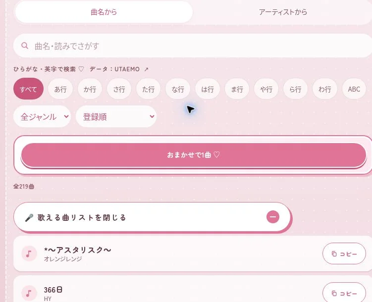
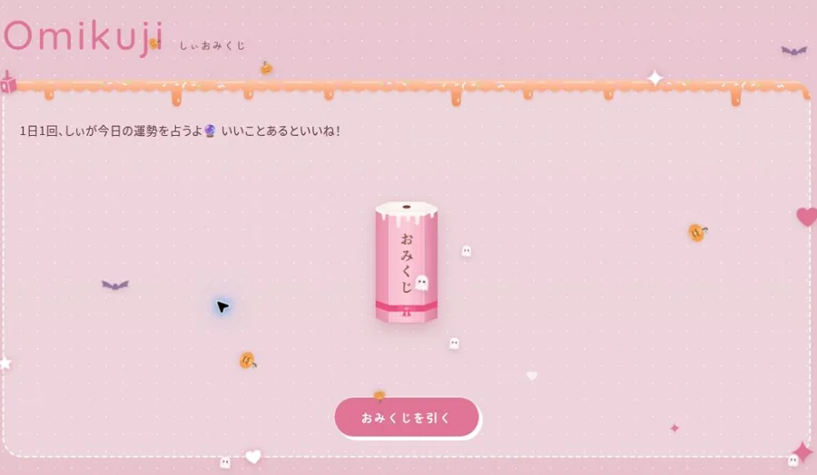
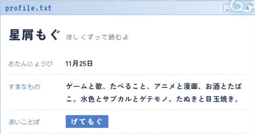

01 / SHII’S ROOM
しぃの部屋
配信者 / 公式サイト

ピンクを基調にした配信者サイト
ロゴとイラストを大きく配置したホームページです。配信予定、歌リクエスト、歌える曲リストなどを掲載しています。
制作のポイント
- ロゴ・イラスト・メニューの配色をピンクで統一しています。
- 配信ページ、プロフィール、歌リクエストにメニューから移動できます。
- おみくじや来訪スタンプの機能を設置しています。
制作したホームページのデザインと機能をご紹介します。スマホ・iPad・PCの画面サイズに切り替えてご覧いただけます。
配信者 / 公式サイト
ロゴとイラストを大きく配置したホームページです。配信予定、歌リクエスト、歌える曲リストなどを掲載しています。
配信者 / 公式サイト
パソコンのウィンドウをイメージしたホームページです。プロフィール、配信情報、SNSへのリンクなどを掲載しています。
歌い手・アーティスト / 公式サイト
ライブ写真を大きく使い、プロフィール、楽曲・MV、ライブ情報、ファン向けの窓口をまとめたホームページです。
掲載許可をいただいたサイトを紹介しています。画面は2026年10月時点のものです。各サイトの独自機能は、内容に応じて追加お見積もりとなります。最新の表示・機能はリンク先でご覧ください。
お知らせや配信予定を、自分で更新できるように。HPとセットで制作できます。
専用管理画面 7,980円〜・税込。HP制作費と運用の実費は別途。内容に応じてお見積もりします。
実際の画面と、できることをご紹介します。必要な機能を選んでご相談ください。

曲名やアーティストで探す、ジャンル・五十音で絞り込む、リクエスト用コメントをコピーするなど、配信中にも使いやすい曲リストです。
標準的な曲リストはライトプランにも対応。独自の検索・分類・データ連携は仕様に応じて確認します。

曲名・アーティスト・ひとことを入力して、歌ってほしい曲を送るフォーム。サイトの雰囲気に合わせた入力画面にできます。
受付方法、保存先、確認方法、迷惑投稿への対策を制作前に確認します。フォームや管理機能は別途お見積もりです。

感想・質問・配信でやってほしいことなどを受け付ける窓口です。実績では、名前を入力せずに送る形式を採用しています。
受信者に伝わる情報や公開の可否を確認します。「匿名」の範囲は保存・運用の仕組みに合わせてご案内します。

ボタンを押して楽しめる、1日1回のおみくじ。結果の文章やキャラクターに合わせた演出を作れます。
実績は端末のブラウザで利用日を記録。別端末との共有や厳密な回数制限が必要な場合は、別の仕組みを検討します。

サイトを訪れるとスタンプがたまり、達成時に壁紙を受け取れる機能。実績では、来訪やサイト内の遊びに応じたランクも用意しています。
実績の記録は端末・ブラウザごとです。データの消去や端末変更で引き継げない場合があります。特典画像の準備や更新方法も確認します。

プロフィールや作品、SNSへのリンクを、活動の雰囲気に合わせて配置します。実績ではウィンドウ風の紹介とイラストのカードを組み合わせています。
掲載内容は各プランの範囲に合わせて制作。画像枚数、カードの切り替えや拡大表示などの追加機能は見積もり時に確認します。
管理Webアプリでは、届いたメッセージを確認し、返信画像を作る機能も用意できます。スタンプ達成時のごほうび壁紙は、イラスト・背景・カレンダー・文章を選んで作る例をご覧いただけます。
返信画像を作るデモ素材・受信内容は架空です。必要な機能と外部サービスの利用を確認してお見積もりします。
管理画面で7日分の配信時間・内容・お休みを入力し、ロゴやミニキャラ入りの画像を作る機能です。画像はSNSのお知らせにも使えます。
予定表のデザイン、画像の保存方法、HPへの反映方法、管理画面の必要性を確認します。管理機能を含む場合は別途お見積もりです。
しぃ管理と同じ形式の出力例を見るここで紹介している機能が、すべて基本料金に含まれるわけではありません。既存の機能を使うか、新しく作るか、保存先や管理画面が必要かによって費用が変わります。
上記はオプション料金の参考です。歌リクエスト・匿名メッセージ・おみくじ・スタンプなどの個別機能は、仕様を確認して金額をご案内します。外部サービスを使う場合は実費がかかることがあります。
料金・オプションを確認する画面は2026年10月時点のものです。実績サイトへのリンクは新しいタブで開きます。フォームの送信先は実際の配信者です。画面の確認だけの場合は送信をお控えください。
制作料金の目安と、依頼受付の状況をご案内しています。